採用した細い稲妻のB案をSVGで再構成。faviconは実際の16・32px PNGを使用しています。ブラウザ倍率100%で確認してください。

現在のApp.tsx / styles.cssの文字サイズと配置を基にした静的プレビュー。ロゴを単色で確認するため背景の発光色は省略。
見るポイント：①16pxでPの輪郭が残るか ②左右の丸い抜きと稲妻を区別できるか ③ヘッダーで文字より強くなりすぎないか。